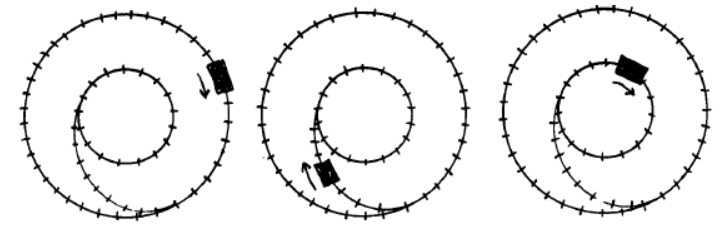

| Debater A: [Opening] It will speed up. Picture someone spinning a ball on a string; the ball spins faster as they pull the string in. It's not a perfect analogy because the speedup will vary based on the dimensions of the train car, but it holds if the train car is assumed to be a point mass. | Debater B: [Opening] The rails only exert forces perpendicular to the car's velocity, so they do no work on a point mass model; kinetic energy stays constant, so the speed stays the same. A small slowdown might be possible if the question author wants us to consider the car a rigid body rather than a point mass. |
| Debater B: [Question 1] It speeds up on a string only because pulling the string inward moves the ball inward while the tension pulls inward too, so there is a force component in the ball's direction of travel. On a frictionless fixed track, the force is sideways; where does the energy needed to increase speed come from? | Debater A: [Question 1] It doesn't seem right to say that the rails only exert forces perpendicular to the car's velocity. Doesn't the instantaneous direction the train travels vary constantly while the train is transitioning tracks? |
| Debater A: [Answer 1] The curvature of the connecting track changes as it transitions from approximating the curvature of the outer track to that of the inner track. So the force is not perpendicular to the direction of travel. The train gains speed while on the connecting path, which it maintains in the inner track. | Debater B: [Answer 1] The direction of velocity changes continuously along the transition curve. In this case the car exactly follows the path of the rail and so the direction of the applied force is always perfectly perpendicular to the velocity, as long as the track is smooth and frictionless. |
| Debater B: [Question 2] On a frictionless fixed track, the car's velocity is always tangent to the path, and the track's contact force is perpendicular to that velocity at every instant. Can you point to any point where the track's contact force isn't perpendicular to the car's instantaneous velocity at the contact point? | Debater A: [Question 2] Does the direction of the applied force, or the car's velocity, differ from the front to the rear of the car? |
| Debater A: [Answer 2] This is true of *every* point on the connecting track. The difference from perpendicular at any single point is infinitesimally small, but they add up when you integrate over the length of the connecting track. | Debater B: [Answer 2] For a point mass model, no. In a rigid body model, the local track tangent differs from front to rear, so front/rear wheels have slightly different velocities, and each contact force remains perpendicular to its contact point's instantaneous velocity, so forces still do no work. |
| Debater B: [Question 3] Infinitesimal work is defined locally: dW = F · dr (OpenStax University Physics). On a frictionless track dr is tangent and the contact force is normal, so F · dr = 0 at every point; integrating zeroes stays zero. What nonzero F_tangent are you integrating? | Debater A: [Question 3] If the local track tangent differs from front to rear, wouldn't the resulting imbalance create torque that decreases rotational kinetic energy, thereby speeding the car up? |
| Debater A: [Answer 3] Curvature changes, so the contact force can't stay perpendicular; you can't just ignore the amount of curvature in such problems (see The Organic Chemistry Tutor for example). In this case dW = F · dr becomes positive. | Debater B: [Answer 3] No. On a rigid body model, because of the velocity relation, tighter curvature demands higher ω. Total KE is conserved, so increased rotational KE must come from translational KE, slightly reducing speed. |